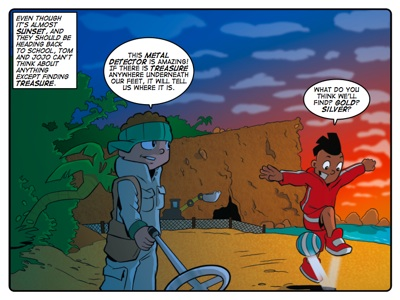
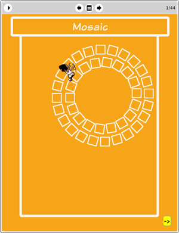

Story: The Forbidden Beach
Theme: Challenging your assumptions.
Synopsis
Tom and Jojo use a metal detector to seek treasure on the beach at dusk. Tom finds a small unidentified object and Jojo suggests continuing their search beyond a wall marked ‘No Entry’. Tom is reluctant but his curiosity is aroused by the response of his metal detector to the forbidden beach’s surface. The two trespassing treasure-seekers suddenly see what looks like an enormous sea monster and they flee.
They return with the rest of the Thunderbolt Kids later that night to investigate the cause of their fright. It's not long before they find themselves caught between what appear to be a pterodactyl and a sea monster. Just as their plight seems truly desperate, the sea monster is revealed to be a submarine and a man emerges from it and deactivates the remote control ‘pterodactyl’.
The man identifies himself as Henry Shellman. He explains his desire for privacy is the reason behind the no entry signs on the fence that borders the forbidden beach and he scolds the kids. Then he teaches them an important lesson: the need to look beneath the surface of things before forming judgements. He uses his subterranean home, the objects the kids found on the beach and his deceptive security system as examples.
The story uses the metaphor of physically looking below the surface of things to represent thinking more deeply about the assumptions we make. Literally probing beneath the beach, the sea or the grime on an arrowhead would have given the Thunderbolt Kids more information and enabled them to correct the faulty assumptions that mislead them.
Activity
This activity challenges learners to count the number of triangles they can see in each of three figures made up of multiple triangles.
The purpose of the activity is to allow learners to experience the feeling of scratching beneath the surface of something that appears obvious to find the truth underneath. Each of the figures appears at first glance to contain only a handful of triangles. But all it takes is for one learner to notice, just once, that some of the obvious triangles form "hidden" triangles when they join with adjacent triangles. This means that there are, in fact, many more triangles in each figure than what there initially appear to be.
In doing this activity we want learners to practice questioning what they see and to recognise that sometimes the truth lies just a few questions beneath the surface. This is not at all because we wish to suggest that you cannot trust the evidence of your senses. Rather, questioning what appears to be obvious is an attitude that will serve your learners well in searching for truth.

The eToys project: Mosaic
In this project Farrah shows learners how to create simple scripts that work together to produce complex patterns. Ultimately the patterns they create depend on the “assumptions” built into their simple scripts. In this way learners discover for themselves that the simplest of details (the amount of turn or the number of repeats) can have a dramatic result in terms of the pattern created.